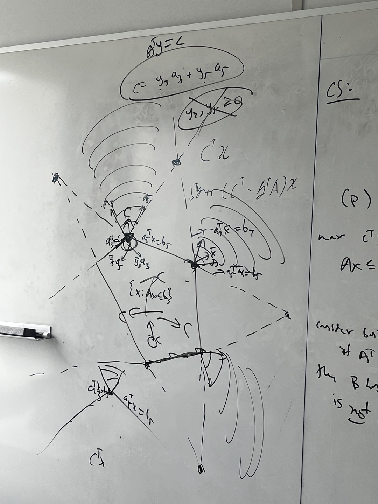

Hey there!
My name is Jaemin Park, a 2B mathematics student at UWaterloo
I am passionate in Mathematics, especially in Combinatorics and Optimization,
which is also my major! I am posting some fun and interesting CO stories, so please check the above link.
Other than CO, things related to data science/analytics may be posted as my second major is Statistics!
Some side projects will be posted on my github
I am also intereseted in the practical usages of mathematics.
So, my side projects including programming projects will most likely be based on such mathematical topics.
Currently, I am working on building an op